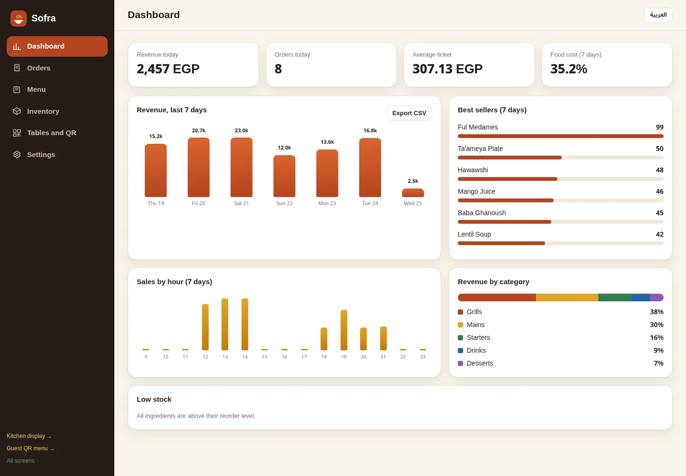
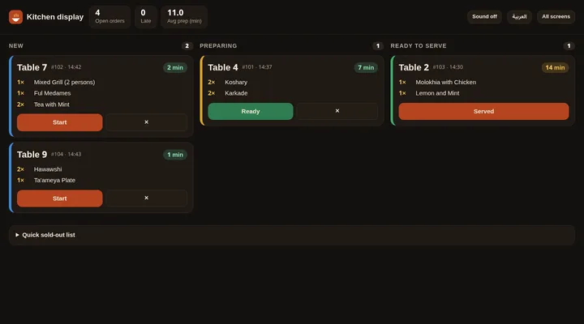
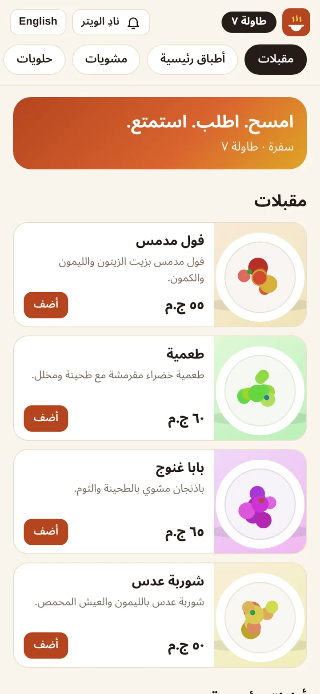
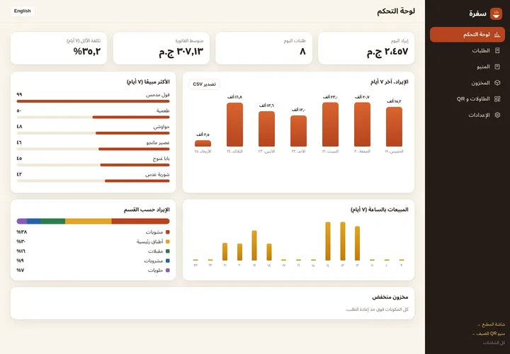
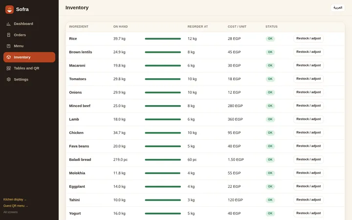
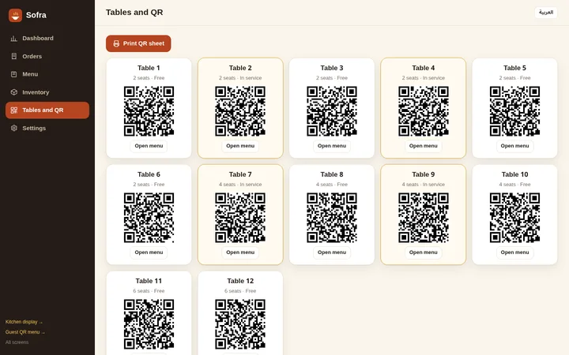

PORTFOLIO DEMO / BUILT / LIVE DEMO
Sofra
From the table to the till.

ACTUAL BUILDSofra · Manager dashboard. Seeded demo restaurant data.
The problem
A busy dining room loses time and money in small ways: orders written on paper, a kitchen that finds out late, a menu item still on sale after the last portion is gone, and a manager who only learns about stock and sales at the end of the week.
What was built
Three connected screens. Guests scan a code on the table and order from a bilingual menu on their phone, track the order and call a waiter. The kitchen display shows live tickets with timers: start, ready, served. The manager dashboard shows revenue, orders, average ticket, food cost, best sellers and sales by hour, takes payments, prints receipts, edits the menu, and manages inventory and the QR codes for twelve tables. The guest menu keeps working with no connection: orders are saved on the phone and sent when the signal returns, once.
The approach
Every dish has a recipe, so an order is tied to real stock. Waiting orders reserve ingredients, so the last portions cannot be sold twice, and stock is deducted when the kitchen starts cooking. The business rules are pure functions covered by 17 tests: totals, status flow, stock, reports and validation. The server takes prices from the menu, never from the browser, and every rendered value is escaped. The front end is plain ES modules with no build step.
The result
A hosted demo you can try end to end: order from the guest menu, start and finish it on the kitchen screen, take payment in the dashboard and see it in the reports. A browser test run on the live site covered this whole flow, plus Arabic right to left and an offline order delivered exactly once after reconnecting.
Evidence & production limits
The hosted demo is fully interactive, but it is demo-grade. All visitors share one restaurant stored in a Vercel Blob store (last writer wins, no locking), and it resets every 6 hours. Screens refresh by polling every few seconds, not by push. A real product needs a transactional database, one workspace per restaurant and real-time updates.
Built / demo. All dishes, orders, stock and sales are synthetic, and dish pictures are generated illustrations. There is no staff sign-in, so anyone with the link can open the kitchen and manager screens. No payment gateway, printer or cash drawer is connected, and there is no Egyptian e-invoice, delivery, reservation, multi-branch or modifier support. The repository README compares it honestly with Toast, Square for Restaurants and Foodics.
Next chapter
Staff sign-in with roles, a real database, push updates to the kitchen, a payment gateway, e-invoicing and delivery or reservation modules would be the next implementation steps.
Inside the build
Open any preview to see the full capture. Captures show test or demonstration content. All records shown are demonstration content, not evidence of client use.




